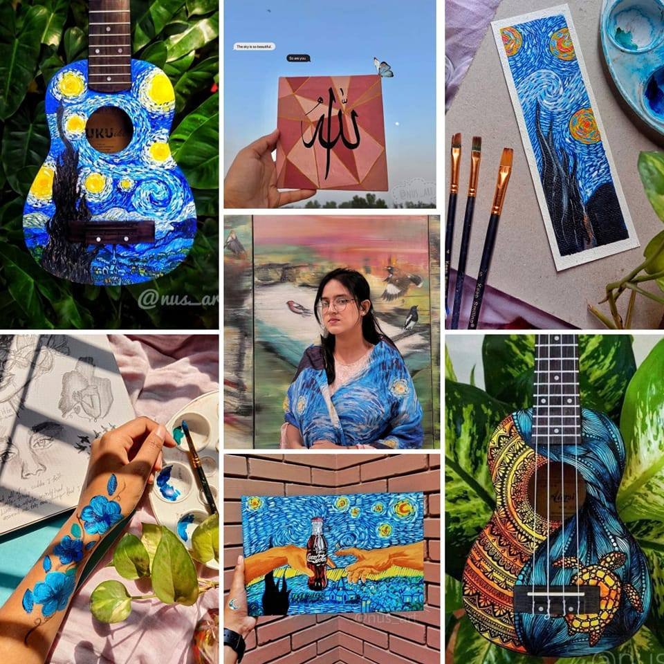
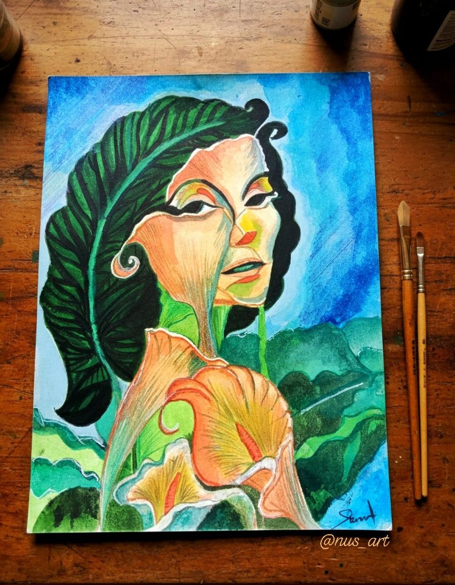
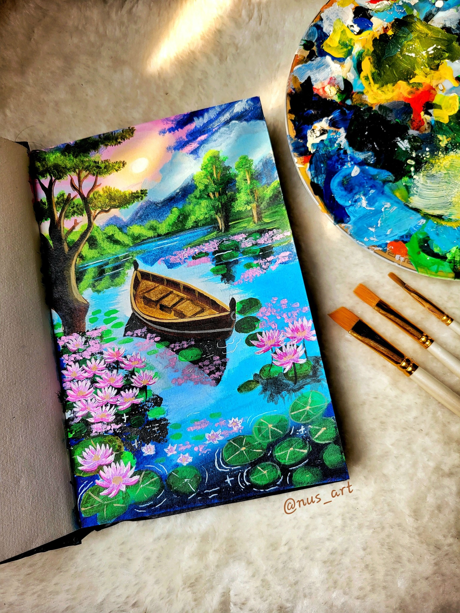
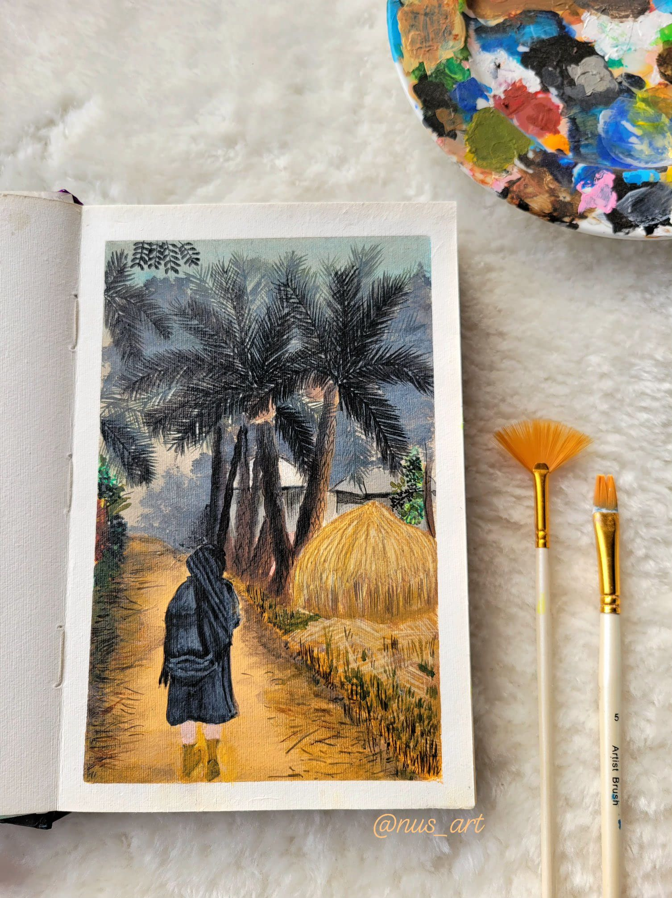
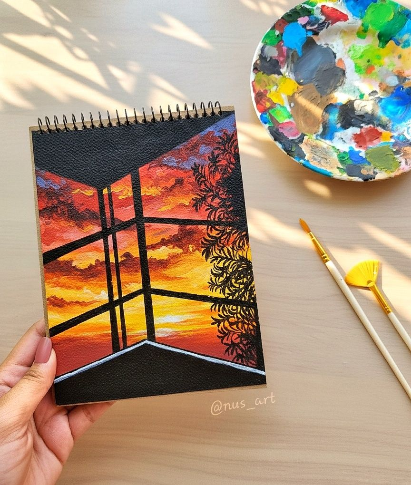
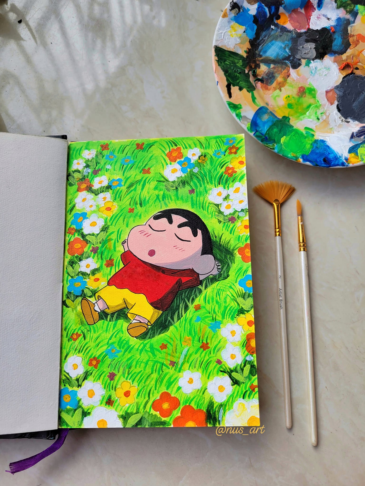
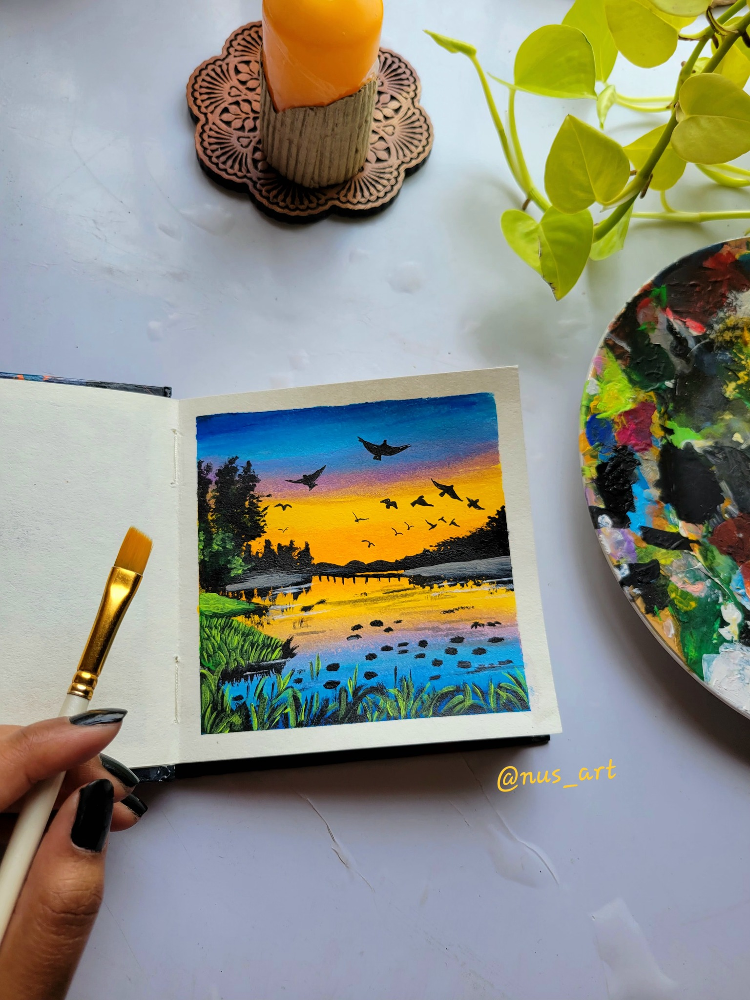
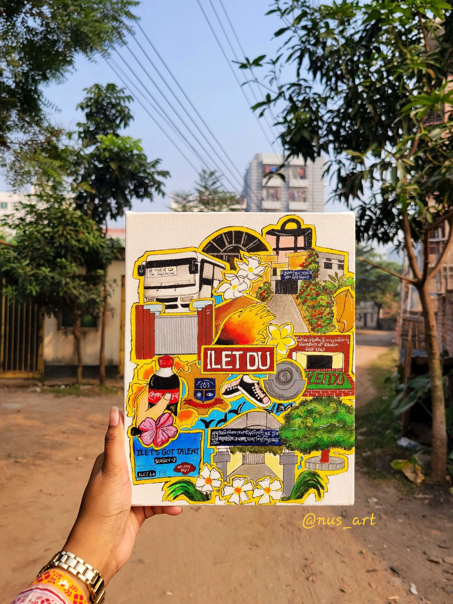
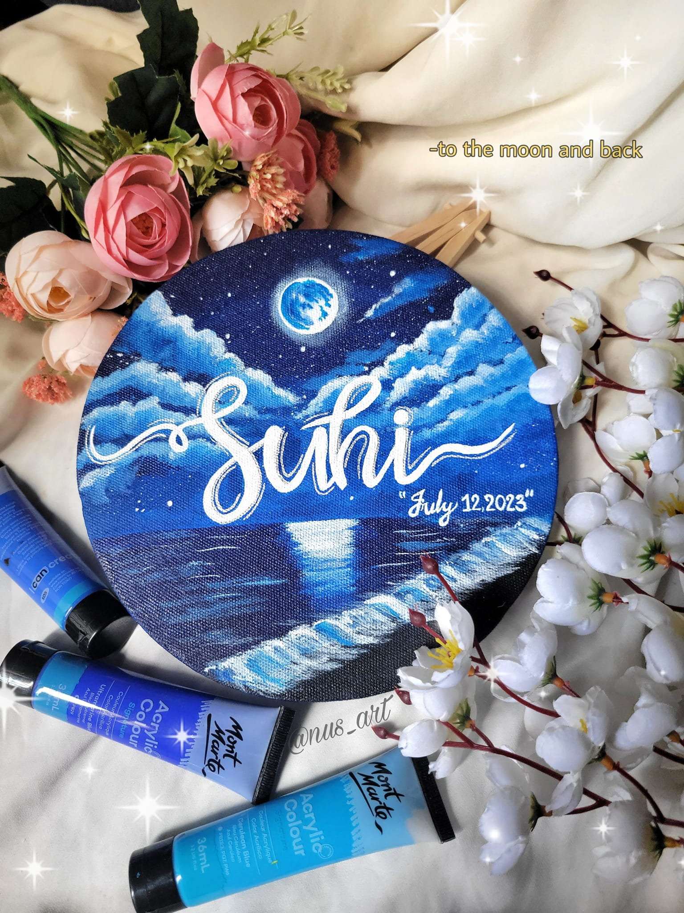

Selected Works

All about my painting

Morning glory in human version

The lonely boat!

Acrylic painting on leather

A winter morning in Bangladesh.

The sunset.

A forever Shinchan fan.

My obsession with sunset.

My Campus doodle.

Calligraphy!.